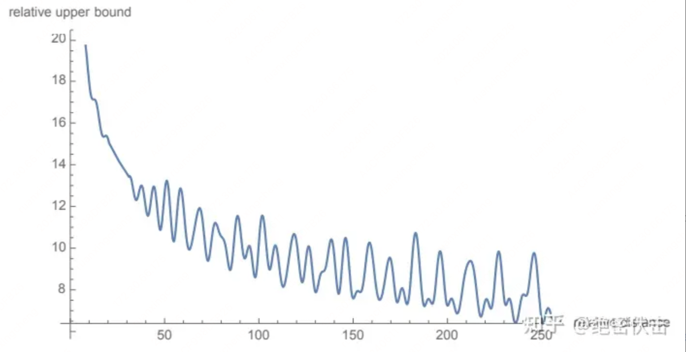

Extending context window of LLMs#
Background: Rotary Position Embedding (RoPE)#
Transformer models require explicit positional information to be injected, typically in the form of positional encodings, to represent the order of inputs. We consider Rotary Position Embedding, which is the position encoding used in the LLaMA model.
Given a position index \(m\in[0, c)\) and an embedding vector \(\mathbf{x} := [x_0, x_1, . . . , x_{d−1}]^{\intercal}\), where \(d\) is the dimension of the attention head, RoPE defines a vector-valued complex function \(f(\mathbf{x}, m)\) as follows
where \(i:=\sqrt{-1}\) is the imaginary unit and \(\theta_{j}=10000^{-2j/d}\). Using RoPE, the self-attention score
is only dependent on relative position \(m− n\) through trigonometric functions. Here \(\mathbf{q}\) and \(\mathbf{k}\) are the query and key vector for a specific attention head. At each layer, RoPE is applied on both query and key embeddings for computing attention scores.
Position interpolation#
Large language models (LLMs) typically come with a pre-defined context window size. For example, inputs to LLaMA models must be fewer than 2048 tokens. This pre-set context window limit is frequently exceeded in application. However, training an LLM from scratch with long context windows requires significant investments. This naturally leads to a question: Can we extend the context window of an existing pre-trained LLM?
One straightforward approach is to fine-tune an existing pre-trained Transformer with a longer context window. However, empirically, we found that models trained this way adapt to long context windows very slowly.
Here, we introduce Position Interpolation to enable context window extensions for certain existing pre-trained LLMs, including LLaMA. The key idea is, instead of extrapolation, we directly down-scale the position indices so that the maximum position index matches the previous context window limit in the pre-training stage.

Position extrapolation#
低维（\(i\to 0\)）部分频率高（\(\theta_{i}\to 1\)）
高维（\(i\to d/2-1\)）部分频率低（\(\theta_{i}\to 1/10000\)）
原本在低维度上，旋转角度较大，意味着这些维度上的信号变化非常迅速，能够精细地区分相邻位置。如果在低维度进行内插，对用低维区分不同位置间的能力影响更大，这种现象称之为高频信息的损失。
因此我们可采用高频外推，低频内插的方式。
RoPE 的远程衰减#
计算 \(a(m,n)\) 时：
\(m\) 和 \(n\) 越近，\(\mathbf{R}_{n-m}\) 旋转得越少，高频维度少低频维度多。
\(m\) 和 \(n\) 越远，\(\mathbf{R}_{n-m}\) 旋转得越多，有很多高频维度转了很多圈，随机性很大，一部分正负抵消一部分振荡。
最终导致 RoPE 远程衰减曲线如下：
